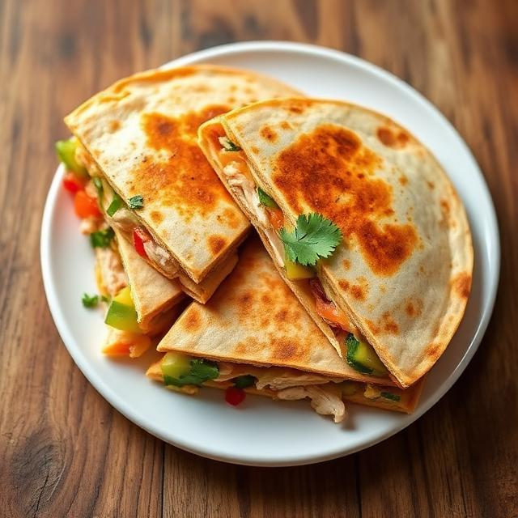

Chicken Quesadillas

Ingredients
- 1 packet (1.27 ounces) fajita seasoning
- 1 tablespoon vegetable oil
- 2 green bell peppers, chopped
- 2 red bell peppers, chopped
- 1 onion, chopped
- 10 flour tortillas
- 1 package (8 ounces) shredded Cheddar cheese
- 1 package (8 ounces) shredded Monterey Jack cheese
- 1 tablespoon bacon bits
Steps
- Gather ingredients, preheat the broiler, and lightly grease a baking sheet.
- Toss chicken with fajita seasoning, then spread onto the prepared baking sheet. Place under the broiler
and cook until chicken is cooked through and no longer pink in the center, about 5 minutes.
- Preheat the oven to 350 degrees F (175 degrees C).
- Heat oil in a large saucepan over medium heat. Stir in bell peppers, onion, and broiled chicken. Cook and stir until vegetables have softened, about 10 minutes.
- Layer half of each tortilla with chicken and vegetable mixture, Cheddar cheese, Monterey Jack cheese, and bacon bits.
- Fold tortillas in half and place onto a baking sheet.
- Bake quesadillas in the preheated oven until cheeses have melted, about 10 minutes. Cut each quesadilla into wedges.
- Serve with sides of salsa and sour cream. Enjoy!